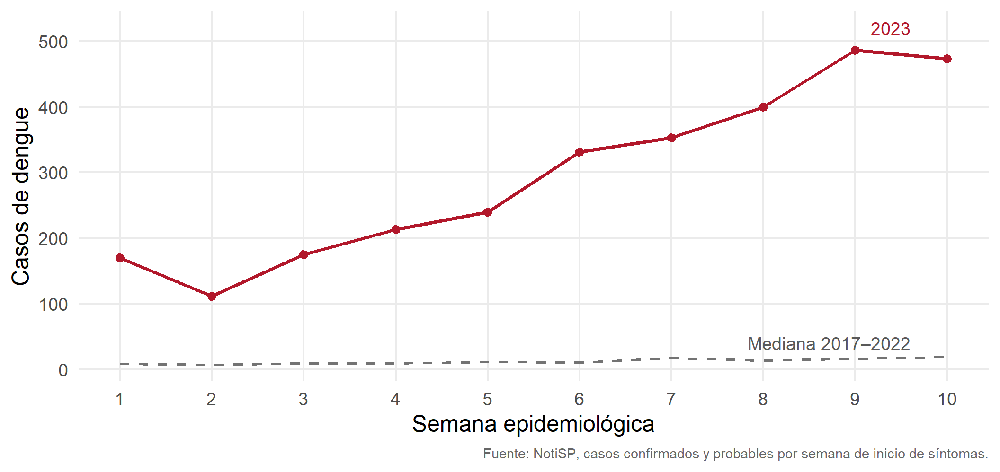
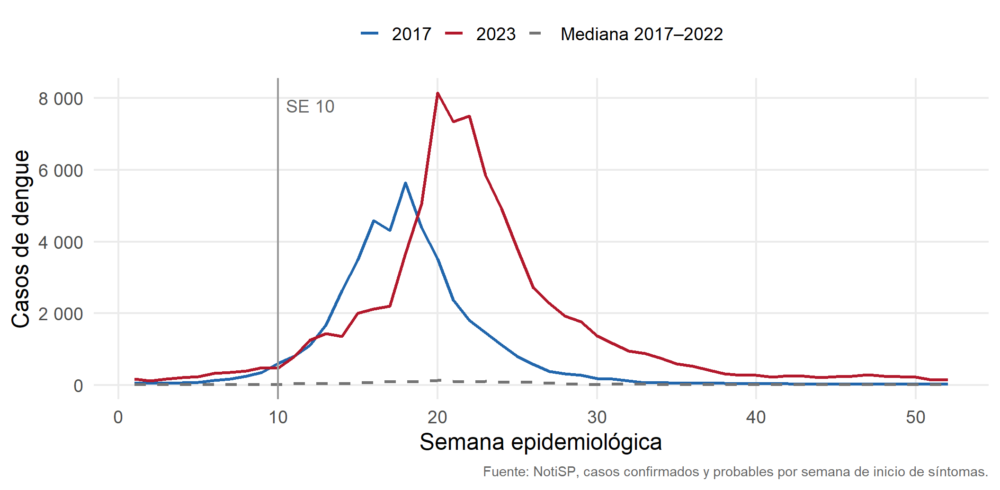
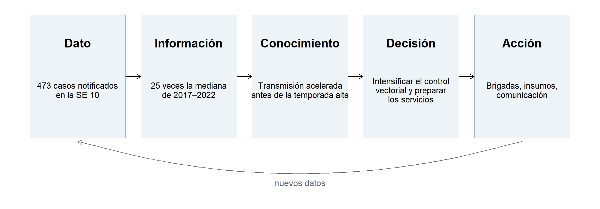
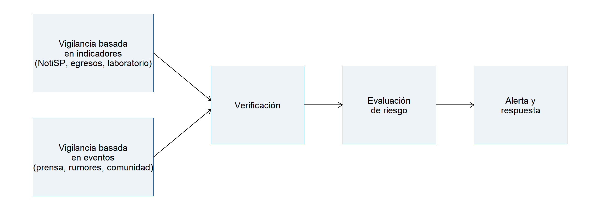

Inteligencia Sanitaria · Sesión 1
2026-11-09

En la SE 10 se notificaron 473 casos. La mediana de esa semana en 2017–2022 fue 18,5.
Usted es el director regional de salud. ¿Qué hace esta semana? (a) esperar, (b) emitir una alerta, (c) intervenir

Pico en la SE 20 (8151 casos). Total del año: 79 304 notificaciones.
Discusión (5 minutos). Algunas pistas:
Recolección, análisis e interpretación sistemáticos y continuos de datos de salud, estrechamente ligados a su difusión oportuna a quienes necesitan saberlo para actuar.
Adaptado de Thacker y Berkelman (1988) y Teutsch y Churchill (2010).
La vigilancia no termina en el boletín. Termina en una acción, o en una decisión justificada de no actuar.

| Punto de quiebre | Ejemplo |
|---|---|
| El dato llega tarde | Semanas recientes incompletas por retraso de notificación |
| El análisis no responde la pregunta | Un boletín con 40 tablas y ninguna recomendación |
| El producto no llega al decisor | El informe se envía cuando la decisión ya se tomó |
| No hay retroalimentación | Nadie revisa si la intervención cambió la curva |
¿Dónde se rompió en Piura?

Marco propuesto por Kaiser et al. (2006) y desarrollado por la OMS (World Health Organization 2014).
| Basada en indicadores | Basada en eventos | |
|---|---|---|
| Ejemplo | Notificación semanal de dengue en NotiSP | Nota de prensa sobre muertes infantiles por tos en una comunidad amazónica |
| Estructura | Definición de caso, formato fijo | Texto libre, sin formato |
| Oportunidad | Días a semanas | Horas a días |
| Especificidad | Alta | Baja: hay que verificar |
| Riesgo principal | Llegar tarde | Falsas alarmas |
| Probabilidad \ Impacto | Bajo | Moderado | Alto |
|---|---|---|---|
| Alta | Piura, SE 20 | ||
| Moderada | Piura, SE 10 | ||
| Baja |
Se evalúan la amenaza, la exposición y el contexto (World Health Organization 2012). La ubicación en la matriz se discute y se justifica; no se calcula.
¿Ustedes ubicarían la SE 10 en la misma celda?
Conocimiento oportuno, construido a partir de varias fuentes, para una decisión específica, con la incertidumbre declarada.
Si falta una de las cuatro partes, es vigilancia rutinaria o investigación, no inteligencia.
| Usuario | Qué decide | Horizonte | Qué necesita |
|---|---|---|---|
| Equipo técnico de epidemiología | Dónde investigar e intervenir | Esta semana | Listas de localidades, curvas por distrito |
| Gestor (red, DIRESA) | Personal, insumos, logística | Semanas | Proyecciones de demanda, priorización |
| Autoridad (región, ministerio) | Declaratorias, presupuesto, comunicación | Meses | Escenarios, una recomendación clara |
| Producto | Para quién | Frecuencia | Detalle |
|---|---|---|---|
| Alerta epidemiológica | Todos los niveles | Cuando ocurre | Mínimo: qué, dónde, qué hacer |
| Boletín | Equipos técnicos | Semanal | Alto |
| Sala situacional | Gestores | Semanal o diaria | Medio, visual |
| Informe técnico | Autoridad | Según la necesidad | Una conclusión y su sustento |
| Tablero | Equipos y gestores | Continuo | Variable |
Estructura usual de un informe técnico de pronóstico:
Lo que hace útil a un informe:
Discusión: ¿qué leería primero una autoridad con 5 minutos?
| Componente | Ejemplo |
|---|---|
| Decisor | Director regional de salud de Piura |
| Decisión | Ampliar o no el control vectorial a nuevos distritos |
| Ámbito | Distritos de Piura |
| Plazo | Próximas 4 semanas |
| Indicador | Casos por semana y por distrito frente a años previos |
| Qué cambiaría la decisión | Que un distrito sin intervención supere su mediana histórica 2 semanas seguidas |
El último componente es el más difícil y el más útil.
| Pregunta de investigación | Pregunta de inteligencia | |
|---|---|---|
| Ejemplo | ¿Qué factores se asocian al dengue grave en Piura? | ¿Qué hospitales de Piura necesitarán más camas en las próximas 4 semanas? |
| Propósito | Generar conocimiento generalizable | Apoyar una decisión concreta |
| Plazo | Meses o años | Días o semanas |
| Usuario | Comunidad científica | Un decisor identificado |
| Incertidumbre | Se reduce antes de concluir | Se declara y se decide igual |
¿Qué le falta a cada una? Resolvemos la primera juntos.
Cada sala recibe una solicitud:
En 15 minutos, respondan en el documento compartido:
Plenaria: 10 minutos.
La S2 trabaja estos problemas con los datos del curso.
La inteligencia se repite: el mismo análisis cada semana, con datos nuevos.
inteligencia-sanitaria/
├── inteligencia-sanitaria.Rproj ← abrir siempre desde aquí
├── datos/
│ └── procesados/dengue_piura_semanal.csv
├── sesiones/s01-fundamentos/practica.qmd
└── R/Con un proyecto de RStudio, rutas relativas y Quarto, actualizar el informe es volver a renderizar (Wilson et al. 2017).
Detalles en la sección Proyecto del sitio.
Inteligencia Sanitaria · DEAEA, FASPA-UPCH · S1